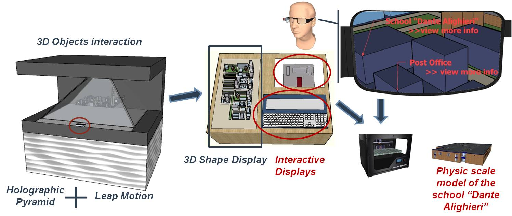

Final project
3D Table

Multimodal interaction with phisical and virtual world. 3D technology since its first appearance on the market has been able to amaze and attract attention in various fields , from leisure , research and industry . Just like in the movies , futuristic virtual reality is mixed with the real world scenarios opening ever wider interconnection man - machine . Kinect , Leap Motion , Oculus Rift are making this a reality.
Haptic Interfaces. In contexts in which the only vision of what is happening is not enough for the user in order to ensure proper control (surgical robotics , space , remote handling ) , are useful and necessary haptic interfaces , or devices that allow you to manipulate an object , real or virtual , and receive tactile sensations in response (feedback).
The final project is related to a wider idea we want to develop in our R&D laboratory. The idea was born remembering old games , especially the Pin Art , the desk -toy patented Ward Fleming . It is a box containing a matrix crowded of tacks that are free to slide in an independent manner such as to create a three-dimensional surface . From this idea sprang the aim of studying the possible uses of interfaces that can change appearance and shape dynamically as the pixels of a screen.
Starting from a single pixel I‘ll make an architecture composed by an environment for the tracking of objects or gestures through a kinect , mounted on a pedestal , reproducible through simulation environment based on web3d and finally through a pin table consisting of a series of actuators ( servo motors and RGB LED ) and drive all by means of a control logic.

Why a 3D Table?
Create new ways of Human-Machine Interaction,
in order to improve User Experience, Usability and Accessibility
As just wrote a wider idea by starting in small
And ….solid thinking…making (almost) anything and putting together
- I can interact with my 3D Object in Holographic Pyramid, for example a City 3D Model. I could rotate the object, highlight a part, explore its composition seeing details that in standard ways I would never have noticed
- I can highlight a part of object and send it to my SMART Table.
- SMART Table is composed by:
- 3D Shape Display where the 3D City Model is rendered and related 3D thematic layers can be displayed
- Two interactive displays built by a Interactive Display Builder (IDB): the first one shows the 3D object or its element and users could draw annotations or select details,while the second one shows a virtual keyboard for insert textual annotations by users.
- A user could watch the 3D Model on the Dynamic Shape Display and see users annotations thanks to augmented reality (ex. by Google Glasses).
The experience could continue by sending the data of an element of 3D model to a 3D printer…..

...in summary
What will it do?
Start in small. A platform of motorized blocks that can render 3D physical content, so that users can interact with digital information in a tangible way. . Using a Deph sensor (Kinect or Xtion Pro Live) to detect depth and rgb maps, a microcontroller system , receives this data and pilots servomotors that raise small parallelepipeds (depth data) and leds (rgb data) reproducing a 2.5 (surface) representation of perceived image frames. An alternative is sending data from an application interface that simulates the reproduction of the surface.
Who's done what beforehand?
The project is similar to the activities carried out in recent years by the Tangible Media Group at MIT Media Lab . The institute presented inFORM a " Dynamic Shape Display" , a motorized platform blocks that can render 3D content into physical , so that users can interact with digital information in a tangible way. In inFORM the images are produced by means of a projector, we want reproduce image map by means of rgb leg of each pin.
What materials and components will be required?
The platform will be composed of:
- Table structure: wood planes, plastic pin, steel wires, servo motors, metal skeleton...
- Electronic equipment: At beginning the idea was to use arduino, finally I will use the new fabkit -sashakit- designed by my colleague Daniele. Leds and other electronics components to control servos. A deph sensor, maybe a Asus Xtion Pro Live.
- Softwre components for imagine acquisition, elaboration and for controlling servos
Where will they come from?
Table structure components will come from local providers
How much will it cost?
The system is composed of a set of servors so is modular and extensible. The cost will depend of the matrix dimensions plus a fixed cost for single equipment (for example deph sensor). At beginning in my R&D lab the idea was to make a table with a matrix of 64 pixels/motors. For the final project I scheduled a smaller version. In summary:
- Table structure: 40 euros plus 6 euros per pin (all included accessories)
- Electronic equipment: at least 4 sashakit + other electronics accessories +deph sensor = 180 euros
What parts and systems will be made?
Most of the structural and electronic components will be made by myself
What processes will be used?
During my Fab Academy assignment I try to think about my final project. In particular I will use the acquired knowledge in the following processes:
- Electronic Production: PCB laser engraving, Soldering components
- Laser cutting
- 3D Printing
- Embedded Programming
- Interface and Application Programming
What tasks need to be completed?
The main tasks:
- 1.Pin movement system
- 2.Depth and image acquisition
- 3.Information transmission
- 4.Servo and Led Controlling
What questions need to be answered?
- 1.Translation of deph information in a pin movement
- 2.best approach to command servos
What is the schedule?
not available yet
How will it be evaluated?
Fist evaluation step will be the controlling of table system by means of a simulation application interfaced with the step motors/leds control system. The second step the entire process from 3d acquisition to 3d table reproduction.
The first step was to think about a single pixel in order to define a first version of the table and its structure.

On the top we have a transparent pin moved by a servo motor connected by an armonic steel wire. on the bottom of the pin a rgb led is connected
My final project as described is and will focused mainly on table structure and driving starting from a deph and colour information from a sensor.The following video shows by means of a web application written that by means of webgl to simulate the table ( in simulation the pins and motors are free ;-)
Starting from this early prototype I think about the overall structure, nd taking into account the total transmitted torque a metal structure solution has been adopted.
Each table layer contains a component of system table layer ( electronics->servo motors-> transmission->pin-push-> pins and leds. The introduction of a pin-push facilitates the stability of the edge transparent pin during its linear movement. In the last months a first try has been performed by adopting a dual layer disposal of motors in order to reduce the distance of neighbour motors respect to the vertical axis of the pi. Obviously the dimension of the motors and their arms are greater than the dimension of each pixel/pin. This first try was useful to test a first release of motor and led drive.
but this solution provide complexity and space reduction on the composition of the entire motor system and transmission (wires are too near). So the approach is to return on a single linear disposal of motors with the support of a rubber tube inside which steel wire flows.

At this moment in order to test the entire system software an arduino pool system is adopted by using a shift register system. After this test the second phase I plan to replace the arduino boards with satsha ones. At this moment I'm going to enhance the table by using the results of Fab Academy assignments.